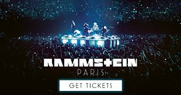
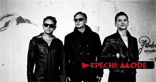
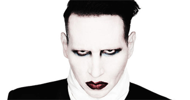
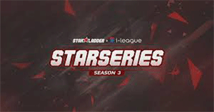

Головні Новини: |
|||||
|  | Rammstein: Paris! Документальный кино-концерт "Rammstein: Paris!" будет показан в Киеве! Один раз, в кинотеатре "Киевская Русь", 29-го марта 2017-го года. Билеты заказывать тут! |
||||
|  | Depeche Mode! Global Spirit Tour. В НСК Олимпийский 19.07.17! В 19:45, Среда! Билеты заказывать тут! |
||||
|  | Marlilyn Manson! Встречайте: 2 августа во Дворце Спорта – великий и ужасный, король нео-гротеска и шок-рока – Marilyn Manson! Билеты заказывать тут! |
||||
|  | LAN-финал SL i-League CS:GO StarSeries S3 пройдет с 4 по 9 апреля
в Киеве, во Дворце “Украина”, как и финал второго сезона. В нем
примут участие 16 лучших коллективов Counter-Strike: Global
Offensive, 8 приглашенных команд и 8 победителей квалификаций. Билеты заказывать тут! |
||||